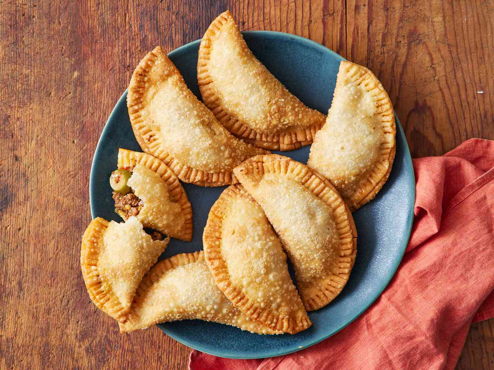

Ensaymada
Ingredients:
- 2 cups all-purpose flour
- 1/4 cup sugar
- 1/2 teaspoon salt
- 1/2 cup warm milk
- 2 teaspoons yeast
- 3 egg yolks
- 1/4 cup butter
- Grated cheese for topping
Instructions:
- Mix yeast and warm milk, let it sit for 10 minutes.
- In a bowl, combine flour, sugar, and salt. Add yeast mixture and egg yolks.
- Knead the dough until smooth, then add butter gradually. Continue kneading until elastic.
- Let the dough rise for 1 hour or until doubled in size.
- Divide the dough into portions, roll each portion, and shape into coils.
- Place on a baking sheet and let rise for another 30 minutes.
- Bake at 350°F (175°C) for 15-20 minutes or until golden brown.
- Brush with melted butter and sprinkle with grated cheese before serving.
Puto

Ingredients:
- 1 cup rice flour
- 1/2 cup sugar
- 1 cup coconut milk
- 1 tablespoon baking powder
- 1/4 teaspoon salt
Instructions:
- Combine rice flour, sugar, baking powder, and salt in a bowl.
- Gradually add coconut milk, stirring until smooth.
- Pour the mixture into small, greased molds.
- Steam for 10-15 minutes or until a toothpick comes out clean.
- Allow to cool slightly before removing from molds. Serve warm.
Buko Pie

Ingredients:
- 2 cups all-purpose flour
- 1/2 teaspoon salt
- 2/3 cup butter
- 4-5 tablespoons cold water
- 2 cups young coconut meat, shredded
- 1/2 cup sugar
- 1/2 cup evaporated milk
- 3 tablespoons cornstarch dissolved in 1/4 cup water
Instructions:
- Preheat the oven to 350°F (175°C).
- Mix flour and salt in a bowl. Cut in the butter until the mixture resembles coarse crumbs.
- Add cold water one tablespoon at a time until the dough comes together.
- Divide the dough in half. Roll out one half and fit it into a pie dish.
- In a saucepan, combine coconut meat, sugar, evaporated milk, and cornstarch mixture. Cook over low heat until thickened.
- Pour the filling into the pie crust.
- Roll out the remaining dough and cover the pie. Seal and flute the edges.
- Bake for 45-50 minutes or until the crust is golden brown.
Empanada
Ingredients:
- 2 cups all-purpose flour
- 1/2 teaspoon salt
- 1/2 cup cold butter
- 1/4 cup cold water
- 1/2 pound ground pork
- 1 small onion, chopped
- 1 small potato, diced
- 1 small carrot, diced
- 1/4 cup raisins
- Salt and pepper to taste
Instructions:
- Mix flour and salt. Cut in the butter until the mixture resembles coarse crumbs.
- Add cold water and mix until the dough comes together. Chill for 30 minutes.
- In a skillet, cook the ground pork until browned. Add onion, potato, carrot, and cook until tender. Stir in raisins and season with salt and pepper. Let cool.
- Preheat the oven to 375°F (190°C).
- Roll out the dough and cut into circles. Place filling in the center of each circle, fold over, and seal the edges.
- Place on a baking sheet and bake for 20-25 minutes or until golden brown.
Hopia

Ingredients:
- 2 cups all-purpose flour
- 1/2 cup vegetable oil
- 1 cup mung bean paste (or red bean paste)
- 1/4 cup sugar
- 1/4 teaspoon salt
Instructions:
- Mix flour and salt in a bowl. Gradually add oil, mixing until the dough forms.
- Divide the dough into small portions and flatten each portion.
- Place a teaspoon of mung bean paste in the center of each dough portion and fold to enclose the filling.
- Flatten each filled dough ball into a disc.
- Preheat the oven to 350°F (175°C).
- Place the discs on a baking sheet and bake for 20-25 minutes or until golden brown.
Pandesal

Ingredients:
- 4 cups all-purpose flour
- 1/4 cup sugar
- 1 1/2 teaspoons salt
- 1 cup warm milk
- 2 1/4 teaspoons yeast
- 2 tablespoons butter, melted
- Bread crumbs
Instructions:
- Mix yeast and warm milk, let it sit for 10 minutes.
- In a bowl, combine flour, sugar, and salt. Add yeast mixture and melted butter.
- Knead the dough until smooth and elastic. Let it rise for 1 hour or until doubled in size.
- Divide the dough into small portions and shape each into a ball.
- Roll each ball in bread crumbs and place on a baking sheet. Let rise for another 30 minutes.
- Preheat the oven to 350°F (175°C).
- Bake for 15-20 minutes or until golden brown.